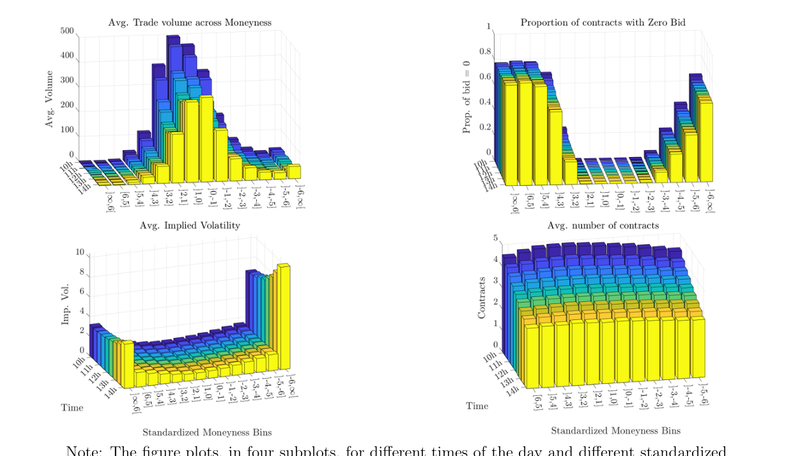

Physical vs risk-neutral distribution
สอง distribution นี้คือพื้นฐานของทั้ง paper
Physical distribution
คือภาพจากข้อมูลจริง: จากอดีต S&P 500 ระหว่างเวลาหนึ่งถึงปิดตลาดมักวิ่งเท่าไร ขึ้นลงบ่อยแค่ไหน
Risk-neutral distribution
คือภาพที่ถอดกลับมาจาก option prices ถ้า option ฝั่งหนึ่งแพงมาก distribution นี้จะให้น้ำหนักฝั่งนั้นมากขึ้น แม้โลกจริงไม่ได้เกิดบ่อยเท่านั้น
ช่องว่างคือข้อมูลสำคัญ
ถ้า risk-neutral ให้น้ำหนัก state หนึ่งมากกว่า physical แปลว่าตลาดกำลังคิดราคา state นั้นสูงกว่าความถี่ในอดีต อาจเพราะต้องการประกันหรือ risk premium

ถามตัวเอง
- physical distribution มาจากอะไร
- risk-neutral distribution มาจากอะไร